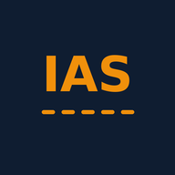

Când poți veni la volan?
Calendarul tău
Alege luna, apoi atinge o zi și spune cum poți. Ce alegi se pune singur în fiecare zi la fel din săptămână — o zi anume o poți schimba separat.
Pe scurt
Asta primește îndrumătorul. Atinge un rând ca să-l schimbi.
Altceva de știut
Doar dacă e cazul.
IAS v2.59.3.5